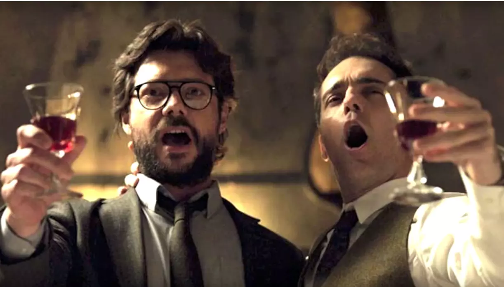
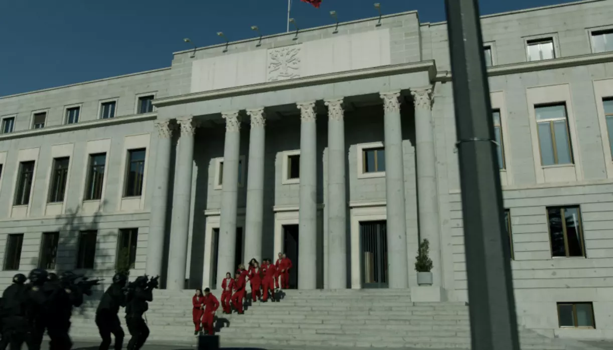
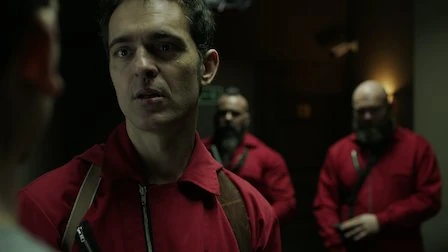
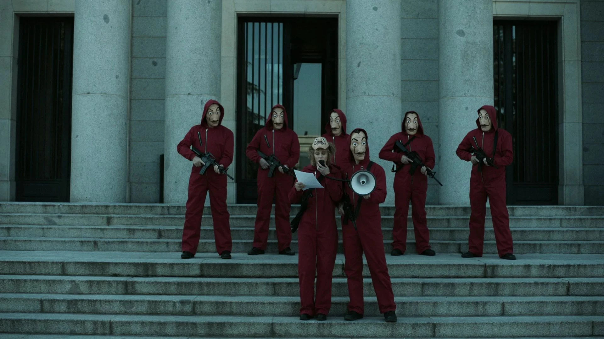
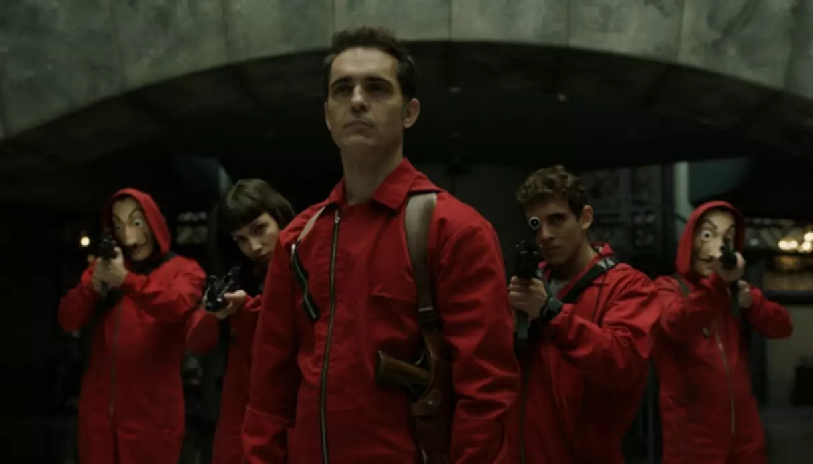

Curiosidades sobre a série
1. Por que escolher a música “Bella Ciao”?
“Bella Ciao” foi cantada a plenos pulmões pelo grupo de ladrões. Mas sabia que a canção possui um passado de luta? Ela foi composta no século 19 por camponesas do norte da Itália, que a cantavam durante o trabalho de colheita contra a opressão dos patrões.
Na série, a gangue central de ladrões ousados canta a canção italiana “Bella Ciao” para se encorajar para o assalto e para comemorar vitórias. A música incorpora o tema de resistência, mas sua letra também serve como um presságio de morte - que a gangue encontrou várias vezes ao longo de seus dois grandes assaltos.
2. A inspiração para o visual de Tóquio
O visual de Tóquio foi inspirado na personagem de Natalie Portman em “O Profissional”. E quando olhamos para as duas fotos, a referência é clara!
No filme de 1994, Natalie interpreta Mathilda, uma garota que se torna protegida de um assassino profissional e que deseja vingar a morte da família. O elenco e a equipe de La Casa De Papel encontraram inspiração em Mathilda ao dar corpo ao personagem de Tóquio, e a semelhança mais óbvia está no cabelo. O corte de cabelo curto e a franja exclusiva são uma homenagem à emocionalmente marcada, mas feroz, Mathilda, e Úrsula Corberó certa vez explicou como Tóquio se conecta a ela. “Então, estávamos fazendo testes e vendo o que funcionaria. Eu pensei comigo mesma que uma franja muito curta e um corte como o de Mathilda realmente dariam uma aparência cruel à personagem através de seus olhos”, disse ela ao NileFM. “E então cheguei na sessão em que estávamos fazendo o figurino e percebi que a parede inteira estava coberta de imagens da Mathilda, e foi incrível.”
3. A Casa da Moeda não é a Casa da Moeda
A fachada que vemos como a Fábrica Nacional de Moneda y Timbre durante toda a série, na verdade não é a Casa da Moeda espanhola.
A equipe por trás da série teve a ideia inicial de filmar uma grande cena na Casa da Moeda Real da Espanha, administrada pelo Ministério da Economia e Negócios espanhol. Infelizmente, apesar de todos os esforços, não conseguiram obter permissão para filmar ali e a produção teve que ser criativa para chegar a um local semelhante. Felizmente para eles, Madrid tem muitos edifícios históricos semelhantes, e o Conselho Nacional de Investigação espanhol (CSIS) fez o trabalho. Eles só precisaram de permissão para filmar algumas cenas externas, já que o restante das filmagens foi feito em estúdio.
4. A doença de Berlim não existe
Na trama, Berlim sofre de uma doença chamada miopatia de Helmer. Só que isso não existe de verdade.
Primeiramente miopatias é o nome genérico que se dá a vários tipos de doenças musculares, fazendo com que elas funcionem de maneira falha, parcial ou integralmente, impedindo muitas vezes o enfermo de se movimentar. Pelos sintomas, parece que o personagem tem miopatia mitocondrial, um distúrbio genético que causa perda progressiva da força muscular. Para controlar os sintomas, Berlim injeta uma droga que tranquiliza diretamente a região afetada, no entanto Miopatia de Hellmer é uma doença fictícia. Criada exclusivamente para a série.
5. O nome da série era para ser outro
A série quase teve outro nome. Antes de escolherem “La Casa de Papel”, a produção trabalhou com o título de “Los Desahuciados”, que significa “Os Desalojados”, em tradução livre. A ideia era pelo fato de que todos os criminosos deixam suas casas antes de embarcar no plano do Professor.
Uma das coisas mais importantes na construção do conceito de um espetáculo é o título. Tem que ser cativante e com um certo talento para aderir facilmente. O título original da série é La Casa de Papel, em espanhol, e embora pareça perfeito, esta não foi a primeira escolha. O criador, Alex Pina, escolheu o título Los Desahuciados, que se traduz como “Os Párias”. Posteriormente, foi decidido que o espetáculo se chamaria La Casa de Papel, já que a cena de abertura em que o elenco assalta a Casa da Moeda Real nada mais é do que uma “casa de papel”. Não há como dizer se o título original pode ter evitado algumas opiniões impopulares sobre a tradução final e controversa de Money Heist.
6. Todos os personagens deveriam ter morrido
Já imaginou se todos os personagens tivessem morrido?  Pois é, originalmente era para todos os personagens terem uma doença terminal (assim como Berlim), o que iria ser o motivo para que todos eles quisessem realizar o roubo histórico.
7. Todos os personagens deveriam ter morrido
Segundo o criador da série, Álex Pina, o final de “La Casa de Papel” foi pensado para os telespectadores, que iriam se alegrar com o sucesso do roubo. 
8. Foi a série mais vista da Netflix em 2020
La Casa De Papel percorreu um longo caminho desde ser uma série local obscura que quase foi cancelada, chegou tão longe que foi a série mais assistida da Netflix em 2020.
La Casa De Papel é inegavelmente viciante, com cada episódio revelando motivos ocultos e tramas secretas. O narrador não é confiável, e a tendência da série para flashbacks e saltos no tempo dá ao programa uma complexidade complicada que exige ser exagerada. Os ladrões apresentam anti-heróis quase perfeitos, mas os elementos subversivos da série sugerem que talvez o próprio capitalismo seja o verdadeiro vilão. A série foi transmitida por impressionantes 65 milhões de vezes naquele ano, o que é uma prova de sua popularidade internacional (de acordo com o The Independent).